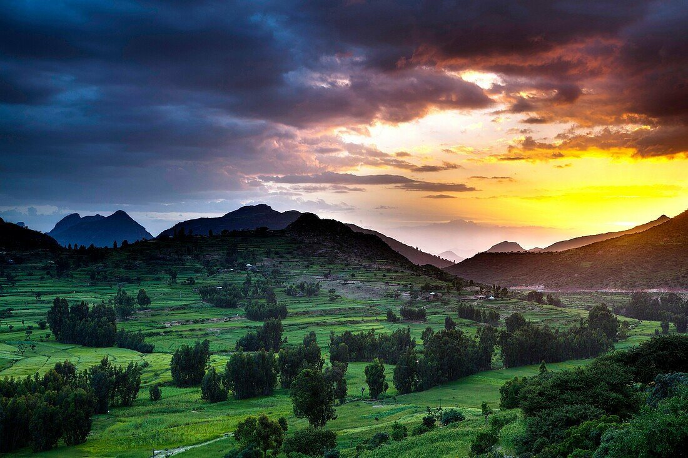

DESCRIPTION:
ትግራይ(Tigray)
*ወናኒት ሓደ ካብቶም ኣብ ዓለም ዝነበሩ ኣርባዕተ(4) ሓያላት መንግስታት ዝኾነ ስልጣነ
ኣክሱም እያ።ኣክሱም ንልዕሊ 3000 ዓመታት ንልዕሊ 360 ንጉሳት መቐመጢ ኮይና
ዘገልገለት ናይ ዘበና ብሕታዊት ኣፍሪካዊት ከተማ እያ።
*ኣብ ኢትዮጵያ ንመጀመርታ ጊዘ ትምህርቲ ዝተጀመረላ።
*ቅድሚ ኣውሮፓዉያን ሃይማኖት ክርስትና፣ቅድሚ ማእኸላይ ምብራቕ ድማ ሃይማኖት እስልምና
ዝተቐበለት፣ከምኡ እውን መዕረፊት ፅላት ሙሴ(ታቦተ ፅዮን) እያ። ታቦተ ፅዮን ኣብ ፍሉይ
ህንፃ መካበብያ ኣክሱም ፅዮን ብኽብሪ ዓሪፉ ይርከብ።
*ኣክሱም ብጥንታውነታን ታሪኻውነታን ኣብ መዝገብ ቅርሲ ኮምሽን ትምህርትን ሳይንስን ውድብ
ሕቡራት መንግስታት(UNESCO) ተመዝጊባ እያ።
*ኣብ ዓለም ዝላዓለ በዝሒ ካብ ከውሒ ዝተፈልፈሉ ኣብያተ ክርስትያናት፣ገዳማትን ደብርታትን
ዝርከብዋ ዓዲ እያ።ኣብ ምብራቕ ትግራይ ጥራሕ ልዕሊ 120 ሙሉእ ብሙሉእን ብኽፋልን ካብ
ከውሒ ተፀሪቦም ዝተሰርሑ ኣብያተ ክርስትያናት ይርከቡ።ካብዚኦም ሓደ ኣብ ዓለም ብብራኽኡ
ተወዳዳሪ ዘይብሉን ምርካቡ ኣፀጋሚ ተባሂሉ "ኣብ ሰማይ ዘሎ ቤተክርስትያን" ብዝብል ቅፅል
ስሙ ዝፍለጥ ኣቡነ የማእታ ይርከብዎም።ብስነ-ፅሑፍ ዝሃፍተመ፣ስነ-ህንፃ ዝቐደሙ፣ብኣቀማምጣ
ዝገርሙ፣ብስእሊ ዘጌፁ ዕድመ ፀገብ ገዳማትን ሊቃውንትን ዝሃፍተመት እያ።
*ወናኒት ኣብ ዓለም ካልኣይ ኣብ ኣፍሪካ ድማ ናይ መጀመርታ ቅዱስ መስጊድ ነጋሽ እያ።
*ቅድሚ ኣማኢቲ ክፍለ ዘመናት ብዝነበሮም ኣገባብ ኣከባብራ ዝበዓሉ ዘይተበረዙ ክብረ በዓላት
ዘለውዋ እያ።ሃፍታምን ዝደንቕን ኣብ ካሊእ ዓለም ድማ ዘየለ ባህሊ ኣለዋ።
*ብተጋሩ ኣክሱማውያን ሊቃውንቲ ዝተምሃዙ ናይ ባዕላ ፍሉያት ፊደላት፣ቁፅርታት፣ኣቆፃፅራ ዘመንን
ሰዓትን ዘለዋ ዓዲ እያ።እዚኦም ኣብ መላእ ኢትዮጵያ ዓብሊሎም ብሕታውነት ሃገራዊ ሃፍቲ ኮይኖም
ኣብ ጥቕሚ ዘለው እዮም።
*9% ናይ ዓለምና ዶሚሳይል ክረይንስ(Demoselle Cranes) ከምኡ እውን ኣብ ምብርቕ ኣፍሪካ ብዝሕ
ዝበሉ ሓራምዝ ኣብ ብሄራዊ ፓርክ ቃፍታ ሸራሮ ዝሓዘት እያ።ኣብ ሓሸንገ፣ዴስኣ፣ገማግም ተከዘን መረብን
ብርክት ዝበላ ኣዕዋፍን ተኽልታትን ዘለውዋ 'ያ።
*ኣብ ዓለም ብፅሬቱ፣መድሓኒትነቱ፣በዝሑን ጠቓምነቱን ዝተመስከረሉ ኣዝዩ ተደላዪ መዓር ፣ክቡራት መዓድናት፣
ዕጣን፣ሰሊጥ፣ካልኦት ዘራእትን ሃፍቲ እንስሳን ዘለዋ እያ።
*ዘደንቑ ሰንሰለታዊ ጎቦታት (ኣላጀ፣ዓድዋ፣ወልቃይት፣ኢሮብ፣ተምቤን፣ዓጋመ፣ወዘተ...)፣ልብኻ ዝሰርቁ ኣቀማምጣ
መሬት፣ሩባታትን ሜዳታትን ዝሓዘት እያ።
*ኣብ ኣፍሪካ እቲ ዝዓሞቐ ጉርዒ ኣብ ሩባ ተከዘ ዘለዋ እያ።
*ከምኡ እውን ስልጡን ህዝብን ሙሉእ ሰላምን ዘረጋገፀት ተቐባሊት ጋሻ እያ።
